- 車名結合引擎排氣量 4,308c.c.的「430」，並在後方加上 Scuderia Ferrari 法拉利車隊的「Scuderia」。除了是 F430 車系的終極版本、擁有 510 匹的最大馬力，以及媲美賽車的輕量化車體外，還是 7 屆 F1 世界冠軍 Michael Schumacher 於 2006 年結束在 Ferrari 車隊的賽車生涯後，投入最多時間參與開發及調校，並親自在 2007 年 9 月法蘭克福車展上替它揭幕的車款。
- 430 Scuderia作為 488 Pista 和 458 Speciale 的大前輩，更是 Ferrari法拉利繼 2002 年推出限量生產 400 輛的 Enzo Ferrari 之後，再一次於市售超級跑車上大量導入 F1 賽車科技。
- 外觀的絕美線條則出自義大利知名設計工作室 Pininfarina 之手，而工程團隊在打造 430 Scuderia 時，導入了許多 FXX 的開發經驗，不僅將後視鏡、內門板、賽車椅及後引擎蓋外框都換上了輕量化的碳纖維部品，隔音材質與飾板也已全數拆除，大幅減輕了 100 公斤的車重 (車重僅 1,250 公斤)
- 430 Scuderia在 Michael Schumacher 的調校下，搭載 6 速自手排變速箱只需 60 毫秒就可完成檔位切換，由靜止加速至時速 100 公里也從 F430 的 4 秒縮短到 3.6 秒，0~200km/h 的衝刺亦僅需 11.6 秒，極速則可達時速 320 公里，放眼今日也依舊是非常亮眼的成績！
